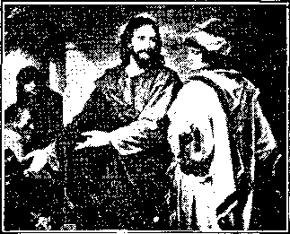
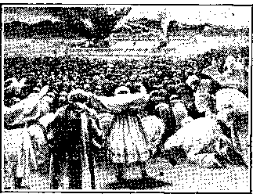

Vol. VIII.
B RO O K L Y N, N. Y.
No. 3.
FACTS FOIL ASSASSINATION OF
PASTOR RUSSELL’S CHARACTER
A post-card request brings free to any one who doubts Pastor Russell’s purity of life and sincerity of purpose, a clear cut statement of the facts at issue. Address I.B.S.A., Brooklyn, N. Y.
Those who read carefully and get the' benefit of the pure spiritual atmosphere into which Pastor Russell leads them need not be told that the many vile printed and pulpit attacks are wholly false and merely the desperate efforts of opponents whose nefarious schemes to keep the people in ignorance of the truth on all subjects Pastor Russell is so fearlessly exposing.
It is for this reason that the millions of newspaper readers continue to enjoy Pastor Russell’s pen products and are not being influenced by any of the so-called news reports with scareheadlines, some of which, if even partially true, would have sent Pastor Russell to prison long ago; but the fact is that not a soul on earth has the slightest cause for grievance against Pastor Russell, except that he: is telling the common people truths the clergy wish them not to know.
“KEEP MY COMMANDMENTS”
JESUS AND THE RICH YOUNG RULER.
“If ye love Me, keep My commandments.”—John 14.15.
WHEN the young man came to our Lord, saying, “Good Master, w’hat good thing shall I do, that I may have eternal life?” our Lord replied, “If thou w’ilt enter into life, keep the Commandments,” and then enumerated the Ten Commandments of the Law. (Matthew’ 19:16-22.) Our Lord could not and did not ignore the Law’ Covenant, neither in His own conduct nor in His teaching. On the contrary, He testified that not one jot or tittle of the Law could fail or be ignored until all be accomplished, and therefore any one violating or teaching others to violate one of the least of them, v’ould (if he got into the Kingdom at all (Matthew’ 5:20), be of a lower grade; and w’hoever would practise and teach these commandments would be great in the Kingdom. Our Lord Himself w’as the only being under that Law Covenant wrho ever kept or taught it perfectly; and He is the greatest in the Kingdom—He inherited all of its blessings and promises.—Matthew 5:19.
Our Lord knew’ that neither the young man W’ho inquired nor any of the fallen race could keep those commandments. • He therefore said, If thou desirest life, do this. Then in view’ of His fulfilment of the Law Covenant shortly and the subsequent Divine acceptance of truly consecrated ones under the Covenant of Sacrifice, at Pentecost, He added: “Come, follow’ Me.” Had the young man obeyed, he would have been one of those accepted of the Father at Pentecost, an heir of life under the Grace Covenant and its law of love and liberty.
THE COST OF THE KINGDOM.
But w’hile our Master wras obeying and fulfilling the commandments of the Jewish Law’ Covenant, He was giving “a New Commandment,” not to the world, but to His follow’ers, the letter, substance and spirit of which was LOVE. In various w’ays He illustrated and amplified this, His one command, which thus wras made to summarize all His commandments—in honor to give each other preference, to forgive one another until seventy times seven times, to follow’ His example in sacrificing their lives for each other and for the Truth’s sake, to love even their enemies and feed these if hungry, to pray for even those w’ho persecuted them. To obey all these was the requirement of the new’ commandment, Love, which was the substance also of all the commandments given to Israel.
Of these commands of our Lord, and not of the Ten Commandments of Israel’s Law Covenant, does the Apostle John speak, saying;
“Blessed are they that do His commandments.”—Revelation 22:14.
“And hereby wre do know’ that we have knowm Him, because w’e keep His commandments.”—1 John 2:3.
“Whatsoever w’e ask we receive of Him, because we keep His commandments and do those things that are pleasing in His sight.” (1 John 3:22.) The Jew’ish Law’ cannot here be referred to; for “By the deeds of the Law [Covenant] shall no flesh be justified in His sight.” (Romans 3:20.) And so we read in the next verse following, that the commands which w’e keep are not those given at Sinai, but “This is His Commandment [to us members of the sacrificing Christ], that w1 2e should believe on the name of His Son, Jesus Christ, and love one another, as He gave us commandment. And he that keepeth His command; ments dwelleth in Him, and He in him; and hereby we know’ that He abideth in us, by the Spirit w’hich He has given us.”—1 John 3:23, 24.
These commandments under w’hich w’e are placed, are not grievous and impossible to obey as were those of the Jew’ish Law Covenant.to those under it: for Christ’s yoke is easy, and His burden is light, to all who have His Spirit; and “if any man have not the Spirit of Christ, he is none of His.”—Romans 8:9.
JEWISH SABBATH TYPICAL
OBJECTIONS BY SEVENTH DAY ADVENTISTS ANSWERED.
THOSE of our readers who have considered carefully our article on “THE DIVINE LAW, UNIVERSAL AND ETERNAL,” as published in our last issue, Vol. 8, No. 2 (sample copy free on request), have doubtless found the question of the Sabbath Day solved to their complete satisfaction. A re-reading of that article, w’ith Bible in hand, will be found profitable.
In further elucidation of the subject we consider the following claims of Seventh-day Adventists worthy of notice and reply:
(1) The Sabbath day was observed before the Law’ was given at Sinai.— Exodus 16:23-30.
Answer. Yes; but the Law Covenant w’as really in force from the time Israel left Egypt. The Passover was a prominent feature of the Law, and it was instituted the night before their exodus began. Moses had already been appointed of God, and, as we have seen, God’s dealings were only w’ith him, as the typical father, or representative of that nation. In accepting and obeying Moses, Israel had already made the Covenant to obey the laws he w’ould give. The demonstration at Sinai was a formal ratification and acknowledgment of their Covenant.
The Sabbath-day was instituted about tw’O weeks before the formal giving on tables of stone at Sinai; namely at the giving of the manna in the wilderness—a most favorable opportunity for giving them an object lesson in the double supply of manna on the sixth day, and none on the seventh. (Exodus 16:22-30.) It was inaugurated as a memorial of their deliverance from Egyptian bondage, in w’hich they had no rest from their taskmasters. This is clearly stated in Deuteronomy 5:15—“Remember that thou w’ast a servant in the land of Egynt, and that the Lord thy God brought thee out thence through a mightv hand and a stretched-out arm; therefore, the Lord thy God commanded thee to keep the Sabbath day.” The Law’ Covenant is continually referred to as dating from that time—“When I took them by the hand to lead them out of the land of Egypt.”—Hebrews 8:9; Jeremiah 31: 32; Ezekiel 20:5, 6, 12, 20.
The fact, however, that we are imi under tne Jew’ish Law’ Covenant, md not dependent upon it for lite, out are hoping for lite as a favor, or from God (through Him who fulniled the Law Covenant and canceled all claims against all w’ho come into him, both Jews and Gentiles), does not. Hinder God’s free children, justified, through faith in Christ’s redemption, and not by the Law’, from using me Jew’ish Law and every other expression, fact, figure and type, at their command, whether from nature or Scripture, in determining what would be acceptable and pleasing to their Heavenly Father.
Thus, for instance, St. Paul, who repudiated over and over ‘ again the dominion of the Law Covenant over any in Christ, quotes one of the Commandments as an evidence to Christian parents of what God’s will is w’ith reference to their government of their children. (Ephesians 6:1-4.) But mark that he does not in any wise present it to them as a command: It never wras a command to parents, but to children. The Apostle’s admonition is to parents concerning their conduct toward their children. Nor does the Apostle intimate justification as a reward; for he writes to those children w’ho are already justified, not by deeds of obedience to the Law Covenant, but by faith in Christ.—“Children obey your parents in the Lord.”
(2) God ordained the Sabbath at creation (Genesis 2:3; Exodus 20:11),. and evidently it was observed all. along, and w’as merely repeated and enforced in the Law given by Moses.
Answer. This is a mistake. The 'account does say that God rested upon, the seventh creative day, but not one w’ord is said about the seventh day having been commanded or ordained, until it w’as given to Israel. On the contrary, there is no mention made of the Sabbath during the entire period of two thousand years preceding Israel’s exodus from Egypt, and then, we are told, as above quoted, that it w’as ordained for that nation and as a memorial of their deliverance.
From the entire account it is evident that it was something new to the Israelites. Its explanation to them (Exodus 16:20-30), as well as Moses’ uncertainty in the case of the first transgression of this Law (Numbers 15:32-36), proves that it was new, that it had not been previously known among them or their fathers.
We should remember, too, that the account in Genesis was written by Moses, and that he very appropriately called attention to the fact that the seventh-day Sabbath commanded in the Law was not without a precedent. But w’hile God’s resting on the seventh day of His w’eek was properly noticed as a precedent for Israel’s observance of a seventh-day Sabbath, it does not at all follow that God’s rest-day W’as a twenty-four hour day; nor that God rested in the same manner that the Israelites w’ere commanded to rest.
The Apostle (Hebrews 4:3, 4, 9-11) explains that Israel did not enter into the real rest or Sabbath, although they zealously observed the seventh day. He says that the reason was,, that they did not exercise the faith by which alone the real rest can be enjoyed. “We that believe do enter into rest [the rest of heart, in faith,, given by Christ], He also hath ceased from his own works [from attempting self-justifying works], as God did from His [works—i.e., as God left the w’ork of redemption and recovery for Christ to do, so we also accept Christ’s finished work, and rest in faith therein, w’ith all the obedience possible.”] Those who trust in the Law Covenant or who blend its re-
(Continued on page 2, column 1.)
W. F. I1UDGINGS, Editor
1?, 15, 17, HICKS ST., Brooklyn, N. Y. r.£onthly-12cts. a year. Single copies 1c.
An Independent, Unsectarian Religious Newspaper, Specially Devoted to the Forwarding of the Laymen's Home Missionary Movement for the Glory of God and Good of Humanity.
Ministers of the T. B. S. A. render their services at funerals free of charge. They also invite correspondence from those desiring Christian counsel.
(Continued from page 1, column 4.) JEWISH SABBATH DAY.
quirements with those of the Grace Covenant, the Covenant of Sacrifice (Psa. 50:5), cannot fully enjoy this rest, which is for the consecrated only.
God’s rest day, instead of being a twenty-four hour day, is a Day seven thousand years long. It began as soon as sin brought God’s curse upon Adam. Instead of undertaking Adam’s recovery out of sin and death, God rested from any further works on behalf of man and earth, and let things take their natural course, purposing in Himself that Christ should have full charge of man’s redemption and Restitution. God gave promises and types and shadows in the Law, but He did not work toward man’s recovery. The first work for man’s recovery was the Ransom laid down by Jesus for Adam and his race.
The Heavenly Father has therefore already rested six thousand years; and He will similarly rest during the Millennium of Christ’s Reign—until its very close, when Christ shall deliver up 'the Kingdom to God, even the Father. [Thus we find the key to the period of creation; for if the seventh day be a period of seven thousand years, as we think we have proved, then each of the preceding days was doubtless of similar length. This pe^ riod agrees well with the results of scientific research, and gives ample time for the gradual development of vegetable and animal life up to the time of man’s creation. In Studies in the Scriptures, Vol. VI., Study 1, wc show the full agreement of the account of creation given in Genesis with the record of the rocks—Geology. Thus considered, the period from the beginning of the ordering of creation on the earth down to the surrender of it perfect to the Father, at the close of the Millennium, is a period of seven times seven thousand years, or a total of forty-nine thousand years; and the grand Epoch then to begin will be the fiftieth thousand, or a great Jubilee, on a grand scale—not the Jubilee of -Israel, nor the Jubilee of general Restitution, but the Jubilee of Earth.]
(3) Tne Command to keep the Sabbath is associated with nine moral precepts which are binding upon all men for all time.
Answer. We have already shown that God had a Law before the giving of the Ten Commandments to Moses and Israel; that it was graven in man’s nature in Adam; and that it was a perfect expression of the mind of God on all questions of obligation to God and to man—much more so than that written upon the tables of stone. Hence, the moral precepts of the Decalogue, a secondary statement of the Divine Law, are not to be ranked as the only moral standard, not the superior one when we know that a new standard was chosen for those covenanting sacrifice, and remember that the original standard is promised for the future—the New Law Covenant.—J eremiah 31:31-34; Hebrews 8:8-11.
The fourth of the Ten Commandments is not at first seen to have any parallel in the Law of Love, the Law or standard of the Grace Covenant. It enjoins a rest every seventh day. However, its parallel in that Covenant is brought to our attention by the Apostle’s words in Hebrews 4:1-11. The word Sabbath signifies rest; and the Apostle here teaches that our rest by faith in Christ, our realization that we are “accepted in the Beloved,’’ is the refreshing antitype of the literal rest-day commanded to Israel under their Law Covenant. Seven is the symbol for completeness, and hence the seventh day foreshadowed the more desirable and complete rest of the true Israel of God, and only those who thus rest by faith in Christ can continue under the blessed provisions of the Grace Covenant; for it is especially a Covenant based upon faith, and without faith it is impossible to please God. Moreover, the true faith cannot be exercised without rest of heart, the true Sabbath-keeping.—Hebrews 11:6.
The poor Jew never could experience such a rest. but. on the contrary had such experiences as the Apostle describes when personating them, “O wretched man that I am! Who shall deliver me?” The nearest approach to the real rest of heart was the typical one given them in the Fourth Commandment of their Law Covenant.
(4) There were two Laws given to Israel, a ceremonial and a moral Law; and it was the former only that was done away by Christ, while the moral Law remains.
Answer. There is no Scriptural authority for such a division. On the contrary, there was but one Law, its ceremonial features providing typically for the cleansing away of sins resulting from the violation of its moral precepts. If it could be seen as the Covenant mediated by Moses, it would be evident that all of its parts must stand or fall together. But after comparing Exodus 34:28, Deuteronomy 4:13, 14, and Hebrews 8:6-8, there should be no question on the part of any one that the Ten Commandments were a part of the Covenant which was temporarily supplanted for the Church by the Covenant of Grace.
When the Apostles wrote to the new Gentile converts respecting the Law— determined not to put upon the Gentiles the yoke of the Law which they as Jews had been unable to keep— and contradicting certain teachers who had said that all Gentiles “must be circumcised and keep the Law/’ St. James remarked incidentally that the Law of Moses, to whicn they referred, was read in the synagogues every Sabbath Day.”—Acts 15:9-11, 24, 28, 29, 19-21.
(5) We Seventh-day keepers claim that God’s command is that we labor six days and rest on the seventh. Many of us have gone to prison because of our conviction that it is our duty to labor on the first day and on all days except the seventh; and we believe that the time is coming when the keeping of Sunday will be a still more severe test, and will bring further suffering upon us.
Answer. We have nothing to do with the making of the social laws which prohibit labor on the first day of the week; but we obey them as civil laws, as commanded in the Scriptures (Romans 13:1-7; 1 Peter 2:13); and we find it to be to our profit as well as to our pleasure. We sincerely sympathize with the poor people who are deluded by such an argument, and suffer therefor; and we admire their willingness to suffer for what they consider to be the truth. But they are mistaken. The laws of this land do not compel any man to violate his conscience by working on the seventh day or any other day.
And it is not sound reasoning to claim that a man must labor during the other six days. If so, are those days of twenty-four hours, or of how many hours? In such a case, for a man to be sick or to go on a journey or on a visit, would be to violate the Law and to fall under its curse. What nonsense! False reasoning has surely blinded whoever cannot see that the fourth commandment of Moses’ Law means, “[Within] six days shalt thou labor and do all thy work”!
As for future persecution along these lines, it is probable; not because of any opposition to Seventhday-keeping, but because, according to the Scriptures, there will ere long be a federation or union of religious systems which, giving increased prestige and honor, will make the demands of popular religionists more arrogant— supposedly in the interest of peace and the cause of Christ.
(6) We Seventh Day Adventists claim that as the Mosaic Covenant had a Tabernacle, with a Holy Place in which the high priest offered for the sins of the people during the entire year, and a Most Holy in which he finished that work on the last day of the year; so there is a Holy and Most Holy in Heaven; and that Christ has officiated for the sins of His people in the Holy during the Gospel Age, and will for a short time before its close officiate in the Most Holy. This we understand to be the “cleansing of the Sanctuary.” We consequently used to teach that all probation ended about 1845, when Christ we believe went from the Holy into the Most Holy. We hold, therefore, that the judgment is all over, and that naught remains except for Christ to come forth and receive us Seventh Day Adventists, and to destroy all the remainder of mankind.
We hold, too, that wo Seventh Day Adventist are fulfilling the “Third Angel’s Message” of Revelation 14:9-12. In the expression, “fear God and keep His commandments,” we place the stress upon the Fourth Commandment.
Answer. You err respecting the antitypes of the Jewish Atonement Day and Tabernacle. The antitypical Holy and most Holy are “heavenly,” in the sense of being higher (such is the meaning of the word heavenly). In Israel’s typical service these were places; in the antitype they are conditions. All of the antitypical or “Royal Priesthood” have access to the Holy condition as soon as they consecrate themselves or present their bodies living sacrifices to God’s service. (Hebrews 9:6.) They at once have access to the antitypical “shewbread” (Leviticus 24:9), “meat to eat that the world knoweth not of.” They at once have the light of Divine revelation. represented by the Golden Candlestick, which the natural man per-ceiveth not. (1 Corinthians 2:5, 7, 9-12.) They at once have access to the Incense Altar, and their prayers and services are acceptable to God through Christ as sweet incense. Thus the first apartment of the Tabernacle represents the present condition of the Church while still in the flesh. Thus we are now blessed with Christ Jesus “in heavenly places [higher conditions.]”—Ephesians 1:3.
But the veil (death) still separates between us and the perfect spiritual condition—the Divine Nature—into which Christ has entered, and into which He has promised to conduct all of His faithful joint-sacrificers and joint-neirs at the close of the Antitypical Day of Atonement.
You err also in supposing that Israel’s typical Day of Atonement was at the end of the year, to atone for past sins. It was, on the contrary, for the nation and at the beginning of their year, to make atonement for the whole nation and to bring the whole nation into God’s favor for the year following it. And the thank-offerings, peace-offerings and trespass-offerings, offered by individuals during the year following, were acceptable upon the basis of that Atonement Day offering. At the close of the year, for which the Atonement Day sacrifices applied, tne people were again as defiled as the residue of Adam’s race, and required a new Day of Atonement as a basis for another year’s acceptance as a typically justified nation.
You err also in supposing that the coming out of the Great High Driest at the close of the Day of Atonement will be for the blessing of seventh-day keepers. He comes out to b'ess, first, the “Royal Priesthood”—they that have made a Covenant with Him by sacrifice. (Psalm 50:5.) “They shall be Mine, saith the Lord, in that day when I make up My jewels.” (Malachi 3:17.) But as in the type not priests onlv were blessed, but “all the people,” so in the antitype all the
ALL THE PEOPLE PROSTRATED.
families of the earth shall be blessed at the revelation of Jesus Christ, when He shall come to be “glorified in His saint - and to be admired in all them that believe in that [Millennial] Day.” (2 Thessalonians 1:10.) The sacrifices and offerings subsequent to the typical Day of Atonement will find their antitypes in the Millennial Age, when all those who desire fellowship with God will come to Him through the Royal Priesthood, who will offer their sacrifices for them. [For a fuller treatment of this subject, see Tabernacle Shadows of Better Sacrifices—140 pp., 10c. |
You are in serious error, also, respecting the Cleansing of the Sanctuary; but. for our view of this subject we must refer you to Studies in thf Scriptures, Vol. III., Study 4.
As to the Third Angel’s Message: Suppose we were to admit your claim, that you are fulfilling Revelation 14: 9-12. That would prove nothing as to the truth or untruth of your message. The Book of Revelation is a symbolic prophecy—a history written in advance. What is occurring and what will occur are faithfully related—often without comment, just as the Old Testament prophecies relate evil things as well as good things, and often without comment. For instance, Daniel 7:8 tells about the Papal horn “speaking great things,” but does not say whether they are great truths or great untruths. So too, in Revelation, Papacy is described and its language quoted without adverse criticism.
(7) Christ said that He came not to destroy the Law and the Prophets, but to fulfil them.—Matthew 5:17.
Answer. Yes; and that is just what we hold. Christ fulfilled the Law Covenant—met all of its requirements, and obtained the promised reward, Life. Thus He fulfilled it; for this was the end for which it was designed and given.
(8) Christ said, “The Sabbath was made for man, and not man for the Sabbath.” (Mark 2:27.) We understand this to mean that the Sabbath was made for all mankind.
Answer. Your inference is not reasonable. If the Sabbath were meant for all mankind, the fact should and would have been clearly stated to all mankind. But the facts are that it was commanded of only one nation, and that Christ and the Apostles did not so command. In this text our Lord is showing to the Jews, to whom the command was given, that they were putting an extreme construction upon the command when they refused to do good on the Sabbath day—to a fellow creature, as well as to an ox or an ass. The Sabbath, was intended for the blessing of the men who were commanded to keep it; they were not created nor caked as a nation simply to serve the day.
(9) In Isaiah 66:23, the Sabbath is mentioned in connection with the new heavens and new earth, which to us means that it will be a perpetual institution—throughout eternity.
Answer. It is possible that in the beginning of the Millennial Age the Lord’s dealing with the world of mankind, then in process of Restitution and trial, will resemble 'Uis dealings with the House of Servants—Israel. He may restore Laws respecting the Sabbath and various festivals, and even sacrifices, to teach the world by these as object lessons. Some Scriptures seem so to hint.—Jeremiah 33; 18; Ezekiel 46:19-24; 47:12; 48:10, 11.
We must remember that the liberty of sons of God, now granted to us, is in view of our being spirit-begotten New Creatures. However, we may be assured that the Law Covenant will never be placed over the world as it was over typical Israel; for it made nothing perfect, and righteousness could not come by the Law Covenant to others any more than to Israel. The New Covenant will remain open throughout the Millennial Age, for all 'who desire to flee from sin and to return to full harmony with God. But by that time, the Seed of Abraham having been completed (Galatians 3:8, 16, 28), none will then have the privilege to become Jointheirs of that Promise, but may come under the blessings which flow from the Seed.
The expression, “from new moon to new moon, and from Sabbath to Sabbath,” to a Jew would merely mean, from month to month, and from week to week; and would not of necessity relate to any special observance of the days.
The Seventh-Day Adventists are surelv doing a world-wide work, and whether right or wrong, might not improperly be mentioned in the prophecy of Revelation. It does seem, however, rather preposterous to claim that their advocacy of the Fourth Commandment of Israel’s Decalogue constitutes them alone the champions of God’s commandments and the faith of Jesus. God’s Commandment to thd Gospel Church under the Covenant of Sacrifice is, “This is My beloved Son, Hear ye Him.” And neiiner He nor any whom He sent forth as His special ambassadors and representatives ever said one word in favor of the observance of the seventh day.
(10) Tne Roman Catholic Church claims to have originated Sunday keeping, admits that there is no authority for it in the Scriptures, and claims the right to make the change.
Answer. The Church of Rome is quick to turn any point in her own favor; and this is one which furnishes a specially good opportunity. It is nothing to admit that Sunday is not commanded in the New Testament (but neither is the seventh-day Sabbath), and it furnishes an excellent chance to emphasize Roman Catholic doctrine—that tradition is equally authoritative with God’s Word.
But this boast that Papacy changed the seventh-day Sabbath to the first-day Sunday amounts to nothing. Where is the proof of it? Nowhere. The fact is that for the Gospel Church God has provided no day for rest, but a rest for every day; and uie early Church on either or both days according to convenience or advantage. The custom of meeting on the first day came down and gradually crystallized into a habit, and later, a supposed duty. But Papacy cannot point back to any date and show by the decisions of any Council that she changed the Jewish Sabbath into the Christian Sunday.
A. Catechism entitled “The Catholic Christian Instructed.” in answer to the quesHon, “What are- the days which the Church commands to be kept holy?” says, “(D rhe Sund/jy or our Lord’s Day, which we observe, by Apostolic tradition, instead of the Sabbath.” Thus llomar'ists do not claim to have changed !:>■ day.
(Continued on page 3.)
An interesting little brochure by Pastor Russell, dealing with the Jewish Tabernacle, Priesthood and sacrifices, in type and antitype. Illustrated, 140 pages, 10c. postpaid.
Published by International Bible Students Assn.
Brooklyn, N. Y.
(Continued from page 2.) JEWISH SABBATH DAY.
(11) The name Sunday is heathenish, and doubtless at one time marked a day on which the Sun was worshiped. Consequently the day should not be recognized nor tne name used.
Answer. Some great infidel may have been named Robert or Thomas, but this would not make you an infidel if you had been given his name. So the propriety of worshiping God on the first day of the week, or on any othbr day is not governed by its common or general name. We have no special choice of name—Lord’s day, Sabbath, or Sunday would any of them serve our purpose, and we could worship God in spirit and in truth on that day as well under one name as another. Sabbath is a good name, and reminds us of our rest by faith in Christ’s sacrifice and in God’s Heavenly promises to all such covenanters following in His steps. “Lord’s Day” is also good, and reminds us that the first day of the week marks the greatest token of Divine favor ever manifested—the resurrection of our Lord. Sunday reminds us of the Sun of Righteousness, our risen Lord, and all the blessings present and prospective that we and the whole world may anticipate through Him. If the heart be right, any of these names may become fragrant with precious memories of God’s grace through Christ.
The Sum of the Matter.
We group below the foregoing conclusions :
(1) The word Sabbath-day signifies i*6st“da,y
(2) Any rest-day might therefore with propriety be called a Sabbath-day. Indeed, this was a custom with the Jews. All of their feast-days they called rest-days or Sabbaths; as, for instance, the first and last days of the Passover were called Sabbaths, no matter upon what day of the week they occurred.
(3) The Sabbath-day commanded in the two tables of stone, delivered by God to Israel by the hand of Moses at Mount Sinai, was the seventh day of the week, not the first day; nor was it merely one day in seven. This was particularly indicated by the extra supply of manna on the sixth day.
(4) While any day of the week would have suited equally well, so far as Israel was concerned, God evidently had a choice. The seventh day chosen by Him, was evidently typical, as were all of God’s arrangements for and with that typical people. We understand that it typified the rest ex? perienced by Spiritual Israel, and referred to by the Apostle in Heb. 4:9.
(5) The Fourth Commandment was as binding as the others of the Decalogue; and hence, if the others continue in force against fleshly Israel— to whom they all were given—so does this one. But neither the Fourth nor any other of the Ten Commandments was ever given to, or made a law for, any other nation than Israel. None could come under its provisions except by becoming Israelites, and practising circumcision.
(6) The Decalogue was the foundation of the Covenant between God and Israel, called the Law-Covenant.— Deuteronomy 4:13.
(7) Since the death of Christ the arrangement between God and those whom He acknowledges as His children is called the “Covenant by Sacrifice,” operative to Jesus’ followers since Pentecost. Its provisions or benefits are not for one race or family of mankind merely, but are open through faith in Christ for all people who desire to become sacrificers with Christ that they may reign with Him.
The Jews, and for that matter some among the Gentiles also, who sought communion and fellowship with God, were continually striving to do something which would atone for their sins and open communion and harmony with God;, but the most earnest were “Weary and heavy laden,” and almost discouraged with their failure. It is to such that our Lord addressed Himself, saying, “Come unto Me, . . . and I will give you rest.”—Matthew 11:28.
(8) As the Law Covenant had the Ten Commandments for its foundation, so the Grace Covenant of selfsacrifice has a new Law for its foundation—the Law of Love. “A new commandment give I unto you, that ye love one another.” The new commandment was not one added to the ten commands of the old Covenant— not an eleventh—but took the place of the ten of the Law Covenant, and was much more comprehensive. Love is the only command of the Grace Covenant and bears only upon those who have come under that Covenant. The world in general has nothing to do
A very interesting pamphlet, explaining every verse in the Bible in which the original words are found that are translated into the English as "Hell,” will be sent on postal-card request, free of charge, to any one. Address I. B. S. A., 15 Hicks Street, Brooklyn, N. Y. with the Church’s Covenant, its privileges, its blessings and its Law, even as they had nothing to do with the Law Covenant and its Decalogue, etc. Only those under the Law Covenant were bound by it or helped by it; and only those under the Grace Covenant are recognized by jt. In due time under Christ’s Millennium the world will be dealt with, and all the willing and obedient will be blessed by the New Law Covenant.
(9) The people of the world in general are not now recognized by God. They are called “the children of this world,” “children of the Devil,” “children of wrath,” etc.; and we are told that they have not “escaped the condemnation that is upon the world,” tnrough “one man’s disobedience,” that they cannot escape except through the provisions of the Grace Covenant now or of the New Law Covenant of the Millennium. Hence “the whole world [God’s covenanted people being exceptions] lieth in the Wicked One.”—1 John 5:19.—Diaglott.
The world once had a Law from God, but they have lost it, or most of it, and are now strangers and foreigners unrecognized by God. (Romans 1:21; Ephesians 2:19.) The original Law was not written upon tables of stone, but was incorporated in man’s very character, so that when perfect in God’s image, he knew right and wrong instinctively—his conscience was a safe and accurate guide. But six thousand years of degradation, as slaves of Sin and Death under Satan, have almost effaced that original law from man’s heart—have warped his judgment and conscience, and made his will the plaything of his animal propensities and hopes and fears.
Provision was made that Gentiles might, if they chose, become Israelites; and that by circumcision and the observance of the Law Covenant proselytes might be joint-heirs with Israel to all the favors and typical privileges granted to that nation. But the Gentiles were not under either the blessings or the curses of that Covenant unless they voluntarily accented it. So now, under the Grace Covenant, arrangement is made for some to come in under its provisions—under its justification, or forgiveness of sins, and under its Law of Love. But only those who have put themselves under it by complying with the regulations are sharers of either its blessings or its responsibilities.
There was no provision made for any Sabbath-day keeping under the Grace Covenant. Every day was to be a Sabbath, or day of faith-rest in Christ, to all under this Covenant, and to no others. The Apostle was careful to guard the early Church against the esteem of one day above another as being more holy. (Romans 14:5-8.) Our Lord’s ministry was under the Law Covenant; and hence He observed the seventh-day Sabbath even while He assured the people that He was “Lord also of the Sabbath day.” (Matthew 12:8.) But neither He nor any of the Apostles ever commanded or even suggested the observance of any special day as a Sabbath. And one of these Apostles declared that he had “not shunned to declare the whole counsel of God”—thus proving that the observance of a Sabbath day was no part of God’s counsel to His sons of the Grace Covenant.—Acts 20:27.
(10) There was no authorization of a change from the seventh day to the first day as a. Sabbath, or rest day. The early Church was composed chiefly of those who had been God’s servants under the typical Law Covenant, and it required time for them to appreciate the fact that the Law Covenant had ended and a Grace Covenant had been introduced, that the original Abrahamic Covenant had become operative. Hence they were warned frequently by the Apostles against Judaizing tendencies and teachers and against a tendency to mix the Grace Covenant and its Law of Love and Liberty with the Law of the Mosaic Covenant. Naturally they still observed the seventh day from custom and convenience, and because in Palestine it was the civil law, and also because on that day they could most successfully reach with the Gospel the most hopeful class of hearers.
Our Lord’s resurrection on the first day of the week, and His subsequent showing of Himself upon that day, seems to have started in the early Church the custom of meeting on every first day, having a simple meal, recounting with prayer and praise the Lord’s mercies, and remembering their risen Redeemer and testifying how His words burned in their hearts when first on that day He had explained to them redemption through His blood—how it was necessary for Christ to die and to rise, etc.
(11) This pleasant custom grew upon the Church, but without any law, for the Apostles assured them that there is no law but love to them that are in Christ Jesus. It was merely a privilege which they prized and used profitably. It was not until centuries had passed, and papacy had arisen with the false idea that its mission was to convert the world by force, if necessary, that laws were made respecting the first day of the week as the Lord’s Sabbath or Sunday. Having gathered into the Churcn multitudes of “tares,” who did not appreciate the liberty or the love of the Covenant of Sacrifice, and who were really as much as ever “children of the Devil,” some laws or regulations were made for their restraint.
(12) The Covenant of Sacrifice controls only “believers”—“the faithful in Christ Jesus”—and leaves these entirely free to do or observe whatever love might dictate; for it is lawful to do good—to do anything that godly love would dictate or approve—on any day; and it is improper to violate the dictates of love upon any day.
Mankind has laws upon the subject, however; and it is God’s command to His people that they be subject to civil rulers in all matters not in violation of their consciences respecting His wishes. On whatever day or however frequently the civil law commands rest from secular labor, it becomes our duty to obey. We can rejoice that we are at liberty to worship how and whom we please, and should gladlv use every opportunity wisely, not forsaking the assembling of ourselves for spiritual refreshment.
We are glad, too, and thankful that the day especially set aside as a Sabbath by civil governments is the very one of all others that we prefer; for it memorializes the beginning of the New Order of things—begun by the resurrection of our dear Redeemer. Hence in outward conduct we conform to the laws of men on the subject, while our hearts, having fullest freedom toward God, we delight to use the first day of the week especially to His pleasement and praise, in doing good to others, particularly to the Household of Faith.
“Stand Fast in the Liberty.”
“We that are strong ought to bear the infirmities of the weak, and nbt to please ourselves.”—Romans 15:1.
Our liberty in Christ, under the terms of our Covenant, must take care that others are not injured by our use of liberty; for this would be condemned by our Law of Love. The Apostle clearly emphasizes this in his letter to the Romans.—Chapters 14: 1 to 15:7.
He there points out that all are not alike strong in the faith. Some, weak in the faith, can see that Christ is our Redeemer, but cannot as yet realize the liberty we have in Christ; for one realizes his liberty to eat whatever agrees with him, while another one, who is weak (in bondage), eats vegetables only, lest he should violate some law under which he thinks himself. Each should learn to grant the other full liberty of conscience; the stronger should not despise the weaker, nor should the weaker judge others by himself. It should be sufficient to Know that God accepts even the weakest ones. So it is also with reference to the observance of days: One man esteems one day above another, while another esteems all days alike. Let each carry out fully the conviction of his own mind.
The Apostle does not here teach, as so many suppose from the common translation, that each should make up his mind and stick to it, whether right or wrong; nor does he teach that one is as right as the other. On the contrary, he urges growth into the full liberty of Christ, but counsels patience and consideration on the part of the stronger for the weaker. He approves the stronger, and plainly states that the brother who thinks himself under a bondage regarding meat, Sabbath days or fast days, is the weak brother. But he urges that if sucn a weak brother observes such bondage—not as an attempt to keep the Law and to justify himself before God, ignoring Christ’s redemption sacrifice, but because he thinks that our Redeemer wishes him to be bound by such ordinances—then the stronger one should not rail at, or make light of, his conscientious weakness, but rather receive him fully as a brother, trusting that discipline and experience and growth in grace and knowledge will gradually bring him to the liberty which others reach more quickly.
And those strong ones who enter fully into the spirit of the Apostle’s remark, “It is good neither to eat flesh, nor to drink wine, nor anything whereby thy brother stumbleth, or is offended, or is made weak,” and deny themselves what their own consciences permit, have the greater blessing They can realize in an additional degree that they are following in the Master’s footsteps; for “even Christ pleased not Himself.”—Romans 14:21; 15:2, 3.
“ VI. “The New Creation”
For if the stronger brethren by sarcasm and influence were tc force the weaker ones to use a liberty they did not realize, it would be forcing them into sin; for any violation of conscience is sin. (Romans 14:23.) Therefore the weaker brethren should be left to the liberty of their consciences. They should be received as brethren, the influence of love and truth alone being brought to bear upon them, in the nope of gradually educating them to an appreciation of their full privileges as free men in Christ. Thus the Body may be full of charity and unity, each one carrying out the convictions of his o,wn mind as to the Lord’s will, and each seeking to grow in grace and knowledge out of childhood’s weakness into manhood’s strength, as rapidly as possible; being developed as he feeds upon God’s Word.
The Apostle again refers specially to the observance of days as a sign of weakness, childishness and lack of development, saying (Galatians 4:10, 11), “Ye observe days and months, and times and years. I am anxious on your behalf lest my labor for you has been in vain.” He here addresses those who had once known the liberty of the sons of God, but who were now getting into bondage through false teaching. He recognized by these weaknesses for the things commanded by the uaw Covenant, an evidence that they were not growing into the liberty of sons of God, but going backward toward the servant condition (see verses 6-9; 19-31); and he was even fearful that this weakness and failure to maintain the liberty of sonship, and this subservience to the Law Covenant might lead them to reject the true Gospel, that Christ gave Himself for our sins, and accept as the Gospel a hopeless substitute—that Christ would save them if they kept the Law.—Galatians 1:4-8; 5:2.
In Colossians 2:14-17 the Apostle declares the same truth with reference to the liberty of all who are in Christ, in respect to the Law; especially singling out the festivals, new moons and Sabbaths. He pointedly declares (verse 13) that those believers who had been Gentiles were pardoned fully and freely from all condemnation, while concerning those who had been Jews, he says (Verse 14) Christ blotted out the , written Law which was against us [believing Israelites], removed it from our way, nailing it to His cross; having stripped away from the original [Law] and its authorities [all obscurities], He made a public illustration of them [in His life of obedience to them], triumphing over them by it [in obedience even unto death, even the death of the cross]. “Therefore [reasons the Apostle, because our Lord has made both you Gentiles and us Jews free] permit no man to judge you in meat or drink, or in respect to a holy day, or of the new moon, or of the Sabbaths, which are shadows of future things, the substance [or antitypes] of which appertain to the anointing [Head and Body].”
Glorious is the liberty of the sons of God! Let us stand fast in it! And let us enjoy to the full our rest of faith; for we can rest (enjoy Sabbath) whether the world has a Sabbath or not; whether any day or no day is commanded by human law, our rest abides. It lasts seven days in each week and twenty-four hours in each day, and is not broken by physical labor, noij is it dependent upon physical ease. It is a deep and lasting rest, and can be broken only by doubt—by a rejection of the basis on which it must abide, the Ransom—or by living after the flesh, and thus disturbing conscience and our relationship toward God.
How blessed is the state of all in Christ, as mature sons of God under favor, not servants nor infants under Law! (John 15:15; Romans 8:15; Galatians 4:1-6.) How blessed to us is the true rest of faith in Christ’s finished work, which rest neither the world nor the Law could give, and which from us that are free, they cannot take away. We realize that Israel’s Sabbath (not only their weekly Sabbath, but also their yearly Sabbath and their Jubilee) was as far inferior to the real as was their Passover inferior to our Passover, and their sacrifices to our sacrifices, and their Altar and Candle-stick and table of shew-bread to ours. The realities, in all these, are a thousand times grander than their shadows. See Studies in the Scriptures, Vol. II., Chapter 6; and Tabernacle Shadows of Better Sacrifices.
640 pp.
750 pp.
Vol. I. "The Divine Plan of the Ages”... 384 pp.
“ II. “The Time Is at Hand”..........384 pp.
" III. "Thy Kingdom Come”............384 pp.
“ IV. “The Battle of Armageddon”.....688 pp.
“ V. “Atonement Between God and Man”
Studies in the Scriptures”
M Over 8,000.000 Copies In Circulation—19 Lan-w guages—Handsome, Embossed Cloth.
bv Pastor Russell
ONLY PAID
for the entire set of six books together with one year’s subscription to Pastor Russell’s semi-monthly journal, The Watch Tower. Order to-day.
INTERNATIONAL BIBLE STUDENTS ASSOCIATION Brooklyn, N. Y., or
London, England.
“Let no man therefore judge you. in meat or in drink, or in respect of an holy day,
good things to come
2 :1C>, 1
Even though differing from you in my views of the Law, 1 feel constrained to express admiralion for the zeal with which you and your co-workers have endeavored to promulgate what you believe to be the truth of God. If we believe anything to be right we must act upon it until the Lord grants us to see otherwise. I had far rather be wrong and consistent than right and inconsistent, though it is best of all to be both right and consistent.
I feel justified in addressing you as a Brother in Christ because of the many points upon which we can hold harmonious fellowship. We look to the same Father in heaven. We trust in the merit of the same great sacrifice for sin. We are seeking light from the same inspired Scripture. We are both striving to live in the way
that will be to the glory of God.
We
see eye to eye upon the nature of the soul, the penalty for sin, earth’s restitution to Eder.ic conditions, the Babylonian state of so-called Christendom, and the impending time of trouble along financial, political and social lines. Then last, but not least, we each gee the necessity of suffering with Christ if we would be glorified with him, and have already suffered a little of the scorn and derision which the world hurls at the soldier of the cross. The enumeration of all these points on which we are agreed will enable you to realize that what I am about to say respecting our differences is not meant in a spirit of wrangling, hut solely for the purpose of sharing yvith you the blessedness and joy which has dawi ed in our hearts with this Comforting Hsxht.
We agree with our Adventist friends that God never authorized anyone to change the Sabbath of the Decalogue from the seventh day of the week to the first, but we do believe that just as truly as the Christian has a greater High Priest, and a greater sacrifice, and a greater tabernacle than Israel had, so, too, the follower of Christ has a much greater Sabbath than the follower of Moses. Everything under the Jewish dispensation was typical cf “good things to come.” (Heb. 10:1.) The Atonement Day, the passover, the
Sabbatic years, the jubilees, etc., were all figures of mere important things, so why should it seem strange that the seventh or Sabbath day was typical any more than the seventh or ~ But in order that you
sabbatic year?
U be the Scriptural
that it does not properly mean “per
pctual” in this passage is evident, for priesthood
Aaron's family lost the
1893 years ago. Note Heb. 7:11-14.
We find, then, that Jehovah used the very same language in speaking of the weekly Saobath which he used respecting other Jewish institutions which passed away when that of which they were typical came, so similarly may not the Jewish Sabbath have passed away, being supplanted by a greater sabbath? Notice our Lord’s W'ords in Matt. 5:17, 18, “Think not that I am come to destroy the Law or the prophets; I am not come to destroy but to fulfil; for verily I say unto you, till heaven and earth pass one jot or one tittle shall in no wise pass from the Law till all be fulfilled.” Our Saviour did not say the Law should not pass away, but that it should not pass away until it was fulfilled. But he tells us first that he came to fulfil it, so if it was fulfilled in him it has passed away. There is a vast difference between a thing being destroyed and passing away as a result of fulfillment. The law of circumcision was never destroyed, but it passed away and was abolished when that to which it pointed, circumcision of the heart, was set forth, and it is this higher circumcision we must observe. (Rom. 2:28, 29.) Likewise Christ did not destroy the Law, or set it at naught, but Lis perfect life fulfilled its every requirement, as we imperfect creatures •could not, and thus he became the great inheritor of all the promises of the Law, with the right to distribute what he inherited under the Law to all who would become his. Additionally the Law led to Chrict and pointed him out as the Holy One of whom Moses had said, “Hear ye him.” (Acts 7:37; Gal. 3:24, 23.) Therefore to consider the Law given through Moses as binding upon the Christian is to doubt whether Christ has accomplished what he came for; “to fulfil” the Law. Of course the Christian must study that Law, and he find's jewels of inspired wisdom in. it, but he studies it as a shadow of better things, as typical of the blessings promised under the
longs to him and is being used to glorify and serve him. The food g'ves us strength to do more for him, therefore the money we spend for food is being spent for our Lord. (Rom. 12:1;
1 Cor. 6:20; 10:31; 2 Cor. 5:15.) In Luke 14:33 our Master does not tell us to forsake or surrender a tenth, but “all that he hath.”
The Jew sang: “Some of self and some of thee.” The Christian sings: “None'of self but all of thee.”
Likewise the Jew gave God one-seventh of his time, but the Christian is to give him seven-sevenths. The Lord said in Lev. 19:30, “Ye shall keep my sabbaths and reverence my sanctuary.” The sanctuary was the holy structure through which God manifested himself to Israel, so to tnem the word meant a certain definite holy place; but the Christian finds his sanctuary wherever he is; every place is a holy place to him. Similarly every day is a holy day, a sabbath of rest to him. He has a better sanctuary to reverence and a better sabbath to keep. But not only does his sabbath differ from the typical sabbath, the nature of his rest also differs. It does not merely mean a cessation from manual labor, but a rest from laboring for self in order to work and live for God. It means to rest as God rested after he had completed the work of creation, as the Word expresses it: “To enter into his rest.” God’s rest does not mean idleness, “He sends his rain and causes his sun to shine” on the seventh just as much as on any other day. Then how did he rest? He ceased working for himself in order to work for man through his Son. And how do we rest like him? By ceasing to work for self in order to work for
him through Christ. Hear Heb. “For he that is entered into his he also hath ceased from his works, as God did from his.” then Paul continues in verse 11,
4:10, rest, own And “let
same verse a law which was not in the> Decalogue (Ex. 21:17; Lev. 20:9), and yet attributes them both to Moses. He was not the author of either, but he was the agent through whom God delivered both commands. Furthermore, the fact that the Law, which was until John (Luke 16:16; Matt. 11:13;, included the Decalogue as well as the
ceremonial
of the Larz, is
may see this . thought hear Paul in Col.
■“Let no man therefore judge you, in meat or in drink, or in respect of an holy day, or of the new moon, or of Ithe Sabbath days: Which are a shadow ©f good things to come; but the body fis of Christ.” The seventh-day keepers will argue that th© Sabbath here refers to some of those yearly occasions, which were also called Sabbaths, because part of their observance required rest from ordinary labor; for instance, the Day of Atonement. But this cannot be the meaning of Paul’s language, for he had already included all these yearly sabbaths under the "words, “an holy day.” In harmony With, his usual systematic forms of expression Paul first spoke of the
2:16, 17:
yearly holy days, then came the monthly festivals, the new moons, and next toe weekly rest days. The Christian has a sabbath, too, but, as we shall see, his sabbath is as much fireater than the Jewish sabbath as the Substance of a thing is greater than
ils shadow.
You may ask: Did not the Lord in Ex. 31:16 speak of the seventh day Sabbath as being given for “a perpetual covenant?” I answer to this that the very identical language which the Lord used here of the Sabbath 'he uses elsewhere of the harvest offering (Lev. 23:14), the Pentecostal sacrifice (Lev. 23:21), the Day of Atonement (Lev. 23:31, 32) and the feast of tabernacles (Lev 23:41). The same Hebrew word “olam,” which is translated “perpetual” in the seventh-day reference, is the word translated “forever” in the other passages. See Young’s Analytical Concordance. So if the Advent view is correct we should still be keeping the feast of tabernacles as well as the Sabbath, but as some of your own brethren have shown, when dealing with the punishment of the wicked, the word “olam,” like the Greek “aion,” really means
greater than Moses—Christ.
Then is the follower of Christ under no law? Yes, Tie is under a new law, a higher law. Just as he has a better High Priest, a better sacrifice, a better everything than the Jew had, so he has a better law, and it contains a better sabbath. Isa. 42:21 foretold that Christ was to “magnify the law and make it honorable,” and we are now under this magnified law. The law said': “Thou shalt not kill,” but Christ magnified that when he taught that whosoever hateth his brother without a cause is guilty of murder. (See Matt. 5:21, 22, 27, 28.) The Law said: “Thou shalt not steal,” but Christ taught us that we should not merely refrain from robbing our neighbor, but be ever ready to share with him what we had, even to the extent of laying down our lives for our brethren. (John 13:24; 1 John 3:16.) The Law said: “Honor thy father and thy mother,” but we are instructed to “honor all to whom honor is due.”—Rom. 13:7.
Now, dear brother, the Adventists .see that Christ magnified the 1st, 2nd, 3rd, 5th, 6th, 7th, Sth, 9th and 10th commandments, but they fail to realize that he magnified the 4th, the Sabbath commandment, too. To the contrary, they believe he made it smaller. One of your brethren put it to me this -way: “Before Christ every little act contrary to the Sabbath commandment, even the building of a fire, was t® be severely punished, but since Christ’s sacrifice, so long as we try to do our best to keep the Sabbath,' the Lord will pardon and overlook where we come short in our obedience to that command.” That would have magnified God’s mercy, but it would not have magnified the commandment. Would it be magnifying the 6th commandment if we should say: “Before Christ murder was to be severely punished, but since then, if you try to keep the Law—“thou shalt not kill”—it will be all right if you do kill a man. once in a while”?
Let me now present our understanding of how Christ magnified the Sab-
us labor therefore,” not let us cease from labor, but labor to put down those selfish propensities which would lead us, contrary to God’s will, to live for self, instead of permitting us “to enter into that rest.” This rest of which the seventh day was a type will not end with this life, but it will continue an eternal rest, begun here and consummated in eternity.
Let me digress here to say that God’s rest day was not a period of 24 hours, but, like the six days of creation, was a long period of time. In. our own language this is a very common use of the word “day,” and it is equally frequent in Bible language. (2 Pet. 3:8; Ps: 95:7-10.) While the day of salvation of 2 Cor. 6:2 is already over 1800 years long, so it was with the great days of creation; they were long periods of time, and likewise the seventh day, in which God rested, is a long period; it is not over yet.
But to return to the subject of this letter. In Isa. 58:13 we have a description by th© inspired Prophet of what constitutes Christian sabbath keep
proved by Rom. 7:6, 7; for Paul, after saying, “we are delivered from the law,” leaves no doubt as to what law is meant by quoting from the tenth commandment. And as his words show we are no longer under the letter (it was the letter which was on the stones), but under the spirit, the antitype, that which was shadowed forth, in the word's on stone, the greater ls.w of love. (James 1:26; 2:8.) When we read, therefore, in the books from. Acts to Revelation about the redeemed, keeping “the commandments of God,” we do not think of the letters in stone given through Moses, but of the magnified law of the spirit of life in Christ Jesus. (Rom. 8:2.) Notice another passage, viz., 2 Cor. 3:3-11. The expression, “written and engraven in. stones,” and the reference to Moses face shining at the time is evidence that Paul is speaking of the Decalogue. In verse 7 he tells us how the Law was accompanied with such glory that it even caused Moses’ face to shine. Then in verse 8 he refers to something which would be accompanied with more glory, and following this up shows that when “the glory that excelleth” (v. 10) should come then, that which was given with glory—i. e., the Law written and engraven on stones—was to be “done away.” (v. 11.) Note the remarkable similarity between the Revised Version rendering of verse 11 and Matt. 5:18 Then in verses 12 to 18 Paul shows that while Israel had Moses cover his face so they could not see the glorious results of the giving of that glorious Law, yet we should, refrain from covering our hearts with the veil of prejudice, etc., as we wish to see the more glorious results of this more glorious law upon the hearts and lives of our brethren, especially as it
must refrain from doing — ----- ways, and from finding
our own pleasures, and from speakown words. That is sab-
our
We own
bath
our
keeping. But the Christian
reflected in
great Elder
Brother, the Lord Jesus.—2 Cor. 3:18.
Dear brother, much more might be written, but I must refrain from more
than one or
brief statements.
Paul’s preaching upon the seventh day, etc., is no endorsement of seventh-day Adventism. That was a day when the cessation from labor brought the Jews together in their synagogues and gave Paul an opportunity he gladly used. Wherever and whenever he found ears to hear he was ready to preach. There were crowds in the synagogues on the seventh day, so Paul went there, and there were numbers at the market every day, so Paul preached there ore other days. (Acts 17:17.) So just as Paul esteemed those opportunities, so we esteem the opportunities afforded, us on the first day, not because there is a divine command to consider that day a sabbath above other days, although we consider it a very appropriate day for meetings of the people of God, being our Lord’s resurrection.
"age-lasting,” or “lasting to a consummation.” It is sometimes used in the sense of eternal, but not necessarily. Thus in Ex. 29:9 we read of the priestly office being given to Aaron and his descendants “for a perpetual statute.” the same word “olam” being used. But
bath Law. The Israelite was to consider one-tenth of what he had as holy unto the Lord; but do we ever hear the Christian advised to give a tithe to the Lord? Not once. How much are we advised to give him? All that we are and have. We are to give all that we can in as direct a way as we can, and the remainder is to be given him in a more indirect W7ay; e. g„ we give him the money we spend for food and clothing, because our body be
must do that every day, therefore every day must be a sabbath to him. For fear you may not apply the latter part of the verse to the sabbath let me refer you to the Revised Version, which reads: “And shalt honor it, not doing thine own ways,” etc. Every day we are to “speak as the oracles of God.” (1 Pet. 4:11.) Every day God is to work in us “to do of his good pleasure” (Phil. 2:13). Every day “the steps of a good man are ordered of the Lord.” (Ps. 37:23.) So again I say, every day is a sabbath to him who liveth “not unto himself.” Is not this a glorious magnifying of the Law?
We can now see how “Christ is the end of the Law for righteousness to every one that believeth.” (Rom. 10:4.) We can understand why Paul could say in Gal. 3:19, “The Law was added * * TILL THE SEED SHOULD COME,” and then in verses 23 to 25 he boldly compares the Law to a severe pedagogue to whom they were committed for a season, “but after that faith is come we are no longer under a pedagogue.” And we can comprehend why Paul mourns because “ye observe days” (Gal. 4:10, 11), and intimates that the brother is weak who “esteems one day above another" (Rom. 14:5—read verses 1 to 7), failing to realize that they are all to be counted as days in which his glory is to be sought.
I know how the seventh.-day Adventists divide the Law into two parts, calling the Decalogue “the law of God,” and the remainder “the law of Moses,” and then claiming that Christ did away with the Law of Moses, but not with the law of God. This is an awful mistake; it was all the Law of God, because it came from him, and it is all the law of Moses in that it came through him. (Lev. 26:46; Deut. 5:5.) Thus our Saviour, in Mark 7:10, quotes one of the ten commandments (Ex. 20:12; Deut. 5:16)., und then in the
day. However, refraining from actual labor on the first day is not an endorsement of the wrong ideas many have held about it, any more than a belief in the Bible would mean an endorsement of the many wrong views which, have been entertained of its teaching. It has been a great comfort to me to> find that salvation did not hang upon such a slender cord as the keeping of a weekly rest day.
There are other features of the Sabbath, for instance its foreshadowing of the Millennium, which I have not touched upon at all. Pastor Chas. T. Russell, of Brooklyn Tabernacle, Brooklyn, N. Y., has treated that phase of the subject most beautifully. Have yon ever read his book, “The Divine Plan of the Ages”? It is a book of 386 pages, cloth bound, for 25 cents. The Watch Tower Bible and Tract Society, 13-17 Hicks street, Brooklyn, N. Y„ supplies them.
Your Brother in the service of the
King of kings,
B. H. BARTON.
FREE LITERATURE!
Send post-card request to the editor for free copies of this paper. Some of the interesting subjects you may have for asking are:
Calamities—Why Permitted?
Divine Law—Universal and Eternal.
Jewish Sabbath Typical.
Spiritism is Demonism.
Cardinal Gibbons on Church Unity.
Immortality of the Soul.
Where are the Dead?
Church of the Living God.
Our Lord’s Return.
St. Peter’s Keys.
Refrain thy Voice from Weepin: Why Financiers Tremble.
Distress of Nations Preceding geddon.
Earthquakes in Prophecy.
What is the Soul?
God’s Message to the Jews.
What is a Christian?
Arma-
SABBATH VIEWS OF REFORMERS.
We do not cite these as of authority on the question; for the words of our Lord and the Apostles are the only authorities we recognize. Yet it is worthy of note that as the eyes of the early reformers, Luther, Calvin and others, opened to the truths of this Gospel Dispensation due in their day, they saw at once that the Law Covenant was not given to the Gospel Cnurch. They saw what every casual reader should observe—that the Apostle Paul contrasts the righteousness, or justification, which conies by faith in the real Sacrifice, Christ, with that which was reckoned to Israel by reason of the blood of bulls and goats (Hebrew’s 10:1-10), and w’hich needed to be renewed yearly. The leaders in the reformation all recognized the difference between Moses the Prophet and Moses the Lawgiver, maintaining that as lawgiver his authority extended only to Israel. They therefore denied that the Ten Commandments were laws for Christians, though they recognized these as valuable indications or interpretations of principles, to all time and people.
Said Luther: “The Ten Commandments do not apply to us, Gentiles and Christians, but only to the Jews. If a preacher w ishes to force you back to Moses, ask him if you were brought by Moses out of Egypt.”
Calvin was no less explicit. He declared that “the Sabbath is abrogated,” and denied “that the moral part of it, that is, the observance of one day in seven, still remains”; w’hile he adds, “It is still customary among us to assemble on stated days for hearing the Word, breaking the mystic bread and for public prayers; and also to allow servants and laborers a remission from their labor.”
Justification by faith instead of by the observance of Mosaic Law’s or Roman Catholic penances, was the plea upon which the Reformation wras started.—See Studies in the Scriptures, Vol. VI., Study 8.
“HOW READEST THOU?”
•' ’Tis one thing, friend, to read the Scripttires through.
Another thing to rend to learn and do;
Tis one thing, too, to read it with delight And quite another thing to read it right.
"Some read it with design to learn to read.
But to the subject pay but little heed; Some read it as their duty once a week. But no instruction from the Bible seek.
"Some read to bring themselves into repute.
By showing others how they can dispute; Whilst others read because their neighbors do,
To see how’ long 'twill take to read it through.
“'Some read to prove a preadopted creed, Thus understanding little what they read; And every passage of the book they bend To make it suit that all important end.
Some people read, as I have often thought, To teach the Book instead of being taught.”